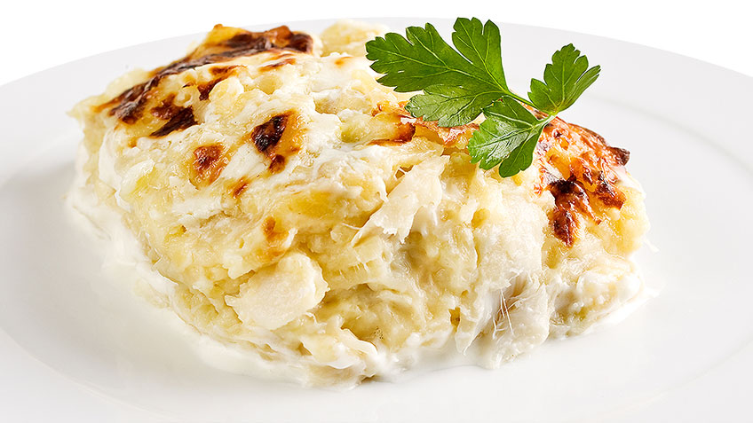

Bacalhau com Natas
Bacalhau com Natas

Description
Bacalhau com natas (literally “cod with cream”) is a popular way of cooking salted cod (bacalhau) in Portugal.
It is an oven-baked dish consisting of layers of bacalhau, onion, diced fried potato and cream.
Use of dairy such as cream or cheese is not common in traditional Portuguese main courses. However the popularity of this dish—in households and restaurants—make it a classic.
Ingredients
- 500g Cod (Bacalhau)
- 6 Potatoes
- 2 Onion
- 3 teeth garlic
- 200 ml Cream
- 200 ml Milk
- Nutmeg
- Olive oil
- Pepper
- Salt
Steps
- If the cod is still not cooked, bake cod until ready, then takes the bones and skins apart in big chunks.
- Start by cooking the potatoes I personally do not care much for the shell. But you can peel the potatoes and bring to bake in warm water until they are good. No need to cook too because then how will the oven may end there is still need of a minutes to be in point.
- However in a frying pan put the onion cut into thin slices with a little olive oil with crushed garlic cloves and let it cook until the onion browned. After joining the cod, test and rectifies with salt and pepper.
- Joins the prepared milk and cream and a tablespoon of butter and a pinch of nutmeg and let the sauce thicken a little, test to see if you need to adjust, as is the taste, remove from heat.
- Strain out the potatoes and cut them into cubes and pour with the cod mixture and involves well. Then put it on a tray or baking dish to bring to a preheated oven hot to about 200ªC enough only for browning the top and is ready!